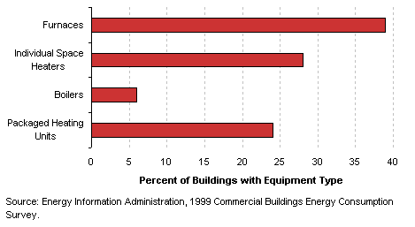
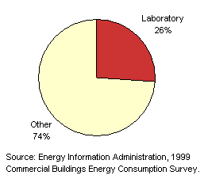
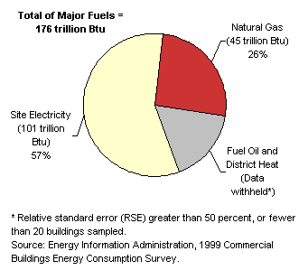

| Characteristics
by Activity...
Other |
Other
buildings are those that do not fit into any of the specifically named categories.
Basic Characteristics
[ See also: Equipment | Activity
Subcategories | Energy Use
]
-
Other buildings include airplane hangars;
laboratories; buildings that are industrial or agricultural with some
retail space; buildings
having several different commercial activities that, together, comprise
50 percent or more of the floorspace, but whose largest single activity
is agricultural, industrial/manufacturing, or residential;
and all other miscellaneous buildings that do not fit into any other
CBECS category.
- Since these activities are so diverse, the data are
probably less meaningful than for other activities; they are provided
here to complete the commercial building picture.
Tables:
Equipment
Table: Buildings,
Size, and Age Data by Equipment Types
Predominant Heating
Equipment in Other Buildings

Top
Activity
Subcategories
Building
respondents who reported that their building was an other building
were then asked to place the building into the following more specific
categories:
- an airplane
hangar
- a crematorium
- a laboratory
- an agricultural
building with some retail space
- a manufacturing
building with some retail space
- some other
type of building
|
|
Other
Buildings by Subcategory |
There were enough
buildings in the responding sample to report statistics for laboratories.
The rest of the other activities have been combined into the other category.
Table: Selected
Data by Type of Other Building
Top
Energy
Use
Other
buildings used 176 trillion Btu of total energy, which was 3 percent
of total energy consumption for all commercial buildings. Since
they accounted for 2 percent of commercial floorspace, this means
that their energy intensity was above the average for all commercial
buildings.
|
| Tables:
Reference:
What is a Btu? |
|
Energy
Consumption in Other Buildings by Energy Source

|
The
total energy consumption data in the figures and tables above are “site
energy,” which includes only the amount of electricity consumed
within the building; energy use can also be expressed as “primary
energy,” which includes the energy consumed during the generation
and transmission of electricity. Other
buildings used 306 trillion Btu of primary electricity, so their total
primary energy consumption was 381 trillion Btu, or 3 percent of total
primary consumption for all commercial buildings.
Top
Specific questions may be directed to:
Joelle Michaels
joelle.michaels@eia.doe.gov
CBECS Manager
Release date: July 24, 2002
Page last modified:
May 4, 2009 2:52 PM
http://www.eia.gov/consumption/commercial/data/archive/cbecs/pba99/other/other.html
If you are having any technical problems with this
site, please contact the EIA webmaster at wmaster@eia.doe.gov. |